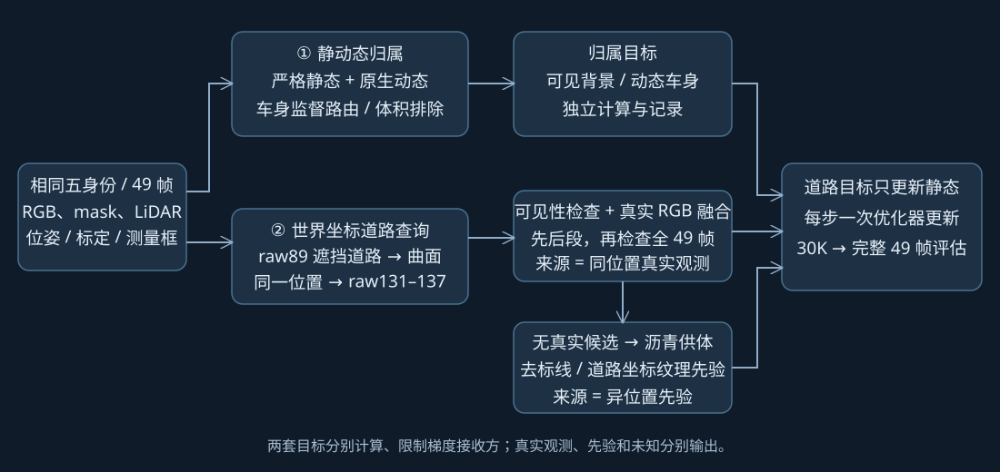
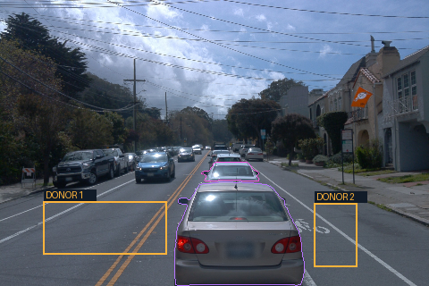
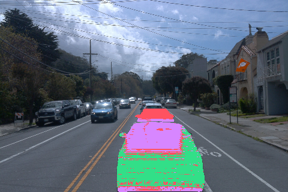
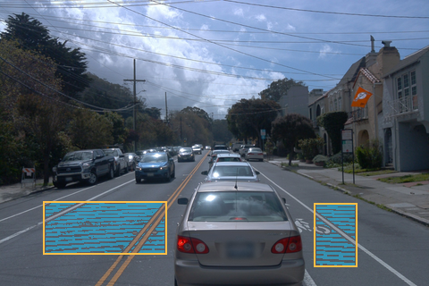

A 新五身份 GN11 · FIRST STAGE v2 · raw89–137
先解决静态里的车辆解释，
再找回同一世界位置的道路
第一阶段30K训练完成；最终零更新49帧交付与实际质量复核待完成。
启动：2026-10-19 17:00:10 新加坡时间；PID 2145。真实49帧输入和CUDA零更新检查已通过，固定相机跨时间静态RGB最大差为0。
采样UTC：2026-10-19T11:11:14.935147+00:00；页面中的道路图是查询来源证据，训练效果尚未验收。
用户已确认：相同五身份、相同 49 帧、相同输入初始化与 seed=0，重新训练第一阶段 30K；第二阶段 0。原版参数与历史资产保留。静态时间自由度的关闭是本版明确的方法变更，不能称为完全相同的模型。
查看用户新增的三组30K消融与实际排队状态：仅归属、归属＋真实曝光、归属＋供体先验；最多两路并发，主实验训练已完成，全部评估与质量复核尚待交付。
模块与数据流

两套目标分开定义、记录和计算梯度。道路梯度仅累积到静态参数，与归属梯度在一次原生更新前汇合；没有增加隐藏训练步数。
① Occlusion-aware Static–Dynamic Disentanglement
静态点保持固定位置、固定时间可见性，停止静态时间位移、寿命和速度参数训练；增密、SGCM 后继续施加该约束。动态类方法保持原样。
车身 RGB、深度和相关图像正则通过动态路径；静态使用可见背景监督。选定车辆的数据集 3D 标注框内增加静态不透明度排除，保护道路上方 0.2m 薄层。这些框是明确使用的额外归属 / 遮挡约束输入，不是独立评估真值。没有把车身 2D mask 内的整层静态 alpha 清零。
体积项是中心测试，无法保证排除大 Gaussian 的尾部、错误深度或框外重复解释。它是待验证修复候选，不是已证明完全分离。
② Temporally Revealed Road Reconstruction
raw89 中 a6、a37 的车身遮挡射线与 LiDAR 支撑的道路高度场相交，定义世界坐标 Query Patch。先投影到 raw131–137，再检查同窗口其余帧；不加入窗外训练图。
通过视野、遮挡 mask、3D 框射线、稀疏实测深度、路面支撑、角度、分辨率和清晰度检查后，在 linear RGB 中做加权一致性融合，至少两帧确认。
一个真实候选或候选颜色冲突时保持待定，不用供体盖掉；没有任何合格真实候选的区域才允许供体先验。真实查询结果见下方分身份表；仅表示当前严格检查确认的观测，不是隐藏道路真值或最终重建质量。
raw89：Query Patch 与供体框分别标记
原图 480×320、左上角 (0,0)。紫 / 粉轮廓是 a6、a37 车身遮挡射线的入口；橙框是用户指定的可见沥青供体。真实世界道路投影、融合来源与未知分类已完成，见下方实际查询图。这里仍保留原始定位预览，便于核对输入角色。

所有显示保留完整 480×320 画面。橙框仅定位，取色输入是未画框的原图。
| 区域 | 坐标（左上 → 右下） | 排除 | 当前颜色过滤候选 |
|---|
| 左供体 | (49,225) → (185,284) | 双黄线、左上白线及边缘 | 6231 像素 |
| 右供体 | (352,227) → (398,298) | 斜白线、自行车标记边缘 | 2444 像素 |
青色表示颜色 / 边缘过滤后的候选，红色表示剔除的标线与边缘。上表是本地颜色候选数。真实道路几何与全部遮挡检查已另完成，实际保留数量见下方供体核查；二者分母不同。
供体纹理按道路坐标采样，保留剔线后的内部纹理，不整框粘贴。当前先验采用周期性道路坐标重采样，可能产生重复纹理或接缝；始终标记为异位置先验，权重低于真实观测，不称为隐藏道路真值。
来源与训练边界
| 分类 | 证据 | 训练和展示 |
|---|
| 真实观测 | 同一世界点、至少两帧通过可见性与颜色一致性检查 | 保留逐点来源帧 / UV / 权重；训练时只约束静态道路 |
| 供体先验 | 合格真实候选数为 0；用户供体内剔线、几何检查通过 | 低权重补全；保留供体位置，不能计入真实恢复率 |
| 未知 / 待定 | 单一候选、颜色冲突、无法构造有效道路交点或供体不可用 | 零道路外观监督；完整画面中单独标记 |
道路表示为测量高度场：局部地面平面加 LiDAR 残差。缺支撑区域仅有平面几何先验；若使用供体，其几何与纹理都不算实测恢复。稀疏 LiDAR 邻近像素不能充当稠密深度真值。所有 49 帧是训练窗口，评估属于重建检查，不是独立测试集泛化结论。
验证与执行进度
15 项 CPU 行为检查通过：静态时间不变、学习率与增密后继续冻结、车身监督梯度路由、道路梯度接收方、未知区零梯度、世界投影与曲面、遮挡检查、稳健融合、供体剔线和来源保护。候选源码完成语法检查和替换位置核验；这些检查未调用 CUDA。
- 已完成真实A49输入、mask、相机和坐标绑定，生成逐点道路证据。相机模型锚帧raw99、SGCM道路锚帧raw89分别绑定，地面平面往返验证通过；全部49相机记录的内参与查询标定差为0。
- 已隔离部署并通过真实CUDA前向 / 反向零更新检查：静态固定相机时间-0.48与0.48的RGB最大差0；静态 / 动态 / 环境梯度组6 / 9 / 1均有限，静态时间参数无梯度，三个优化器实际更新计数均0。
- 主实验已按授权完成相同初始化 fresh 30K；消融状态另见四组比较页。保留 5K/10K/15K/20K/25K/30K 完整状态与原生评估，无第二阶段、无额外消融、无自动重放。
- 最终零更新输出全 49 帧完整 / 动态 / 静态 / 删除图及 alpha，和原 A 第一阶段对比；实际检查静态车形、动态质量、道路真实恢复、先验区域与阴影，报告不能仅凭 loss 宣布通过。
已完成的真实世界道路查询
原始query共15,869个车身像素射线样本，其中15,625个有有效道路交点。模型坐标锚帧raw99与地面拟合坐标锚帧raw89是不同角色，均已绑定核验。
| 车辆 | query样本 | raw131–137确认 | 全49帧确认 | 供体先验 | 未知 |
|---|
| a6 | 1,149 | 0 | 0 | 245 | 904 |
| a37 | 14,720 | 4,765 | 7,787 | 4,874 | 2,059 |
晚段确认包含在全49确认内，不能相加；全49确认、先验和未知三项合计为原始query数。分母是像素射线样本，不能当均匀世界面积。a6未获确认，说明当前严格条件没有足够证据，不能据此断言物理上始终未曝光。先验与未知均不计入真实恢复率。

raw89：绿=在其他帧确认的同世界位置真实观测；紫=异位置供体先验；红=未知（含244个无有效道路交点样本）。这是数据来源标注，非模型训练结果。
raw131–137：绿=该帧实际参与融合的确认观测；蓝=同位置在其他帧确认、该帧未参与融合；紫=供体先验；红=未知。投影落在遮挡物上只表示query位置，不能算该帧曝光。
供体实际来源核查
深度与颜色检查候选：左4,423 / 右1,614；再经高度场支撑核验，保留左4,249 / 右1,605个供体样本。5,119个先验query使用了770个不同供体样本。独立CPU重建的供体索引、类别与RGB全部匹配冻结目标，RGB最大差0.0，没有修改训练输入。

青色为实际几何合格供体；取色仍使用未画框原图。先验来源于不同世界位置，不计入真实恢复。实际完整保存节点
| 步数 | 静态 / 动态 / 环境 / 训练状态（B） | 续训状态与原生评估 | 证据 |
|---|
| 5,000 | 475,740,851 / 303,471,134 / 226,494,608 / 50,008 | sampler 5,000 / RNG / SGCM / 原生49齐全 | CPU核验凭据 |
| 10,000 | 529,844,211 / 786,948,958 / 226,494,608 / 49,944 | sampler 10,000 / RNG / SGCM / 原生49齐全 | CPU核验凭据 |
| 15,000 | 569,273,779 / 786,948,958 / 226,494,608 / 49,944 | sampler 15,000 / RNG / SGCM / 原生49齐全 | CPU核验凭据 |
| 20,000 | 569,273,779 / 786,948,958 / 226,494,608 / 49,944 | sampler 20,000 / RNG / SGCM / 原生49齐全 | CPU核验凭据 |
| 25,000 | 569,273,779 / 786,948,958 / 226,494,608 / 49,880 | sampler 25,000 / RNG / SGCM / 原生49齐全 | CPU核验凭据 |
| 30,000 | 569,273,779 / 786,948,958 / 226,494,608 / 49,944 | sampler 30,000 / RNG / SGCM / 原生49齐全 | CPU核验凭据 |
每个列出的节点均有独立CPU只读凭据，模型与Adam张量有限。没有做节点GPU恢复或增加优化更新，不代表图像质量通过。
同输入与seed协议进一步核对：实际前100步选帧、时间扰动、动态学习率和静态XYZ学习率与原版逐项一致；静态时间参数按本版方法关闭。旧版没有逐位初始GPU参数快照，因此不把协议一致夸大成已完成旧初始张量逐位对照。协议核对凭据。
分身份统计与分母 · 完整世界点、来源UV与可见性证据NPZ（约10MB，无模型） · 真实CUDA零更新凭据 · 当前运行采样 · 冻结供体来源核查 · 全49相机内参核对
参考工作与实际迁移范围
- DeGauss（官方代码）：参考静态 / 动态表示解耦与遮挡归属思路；本候选不是其完整概率合成与重置策略复现。
- 3DGIC（官方代码）：参考跨视图深度与遮挡一致性；该工作包含图像补全，本候选的真实观测融合与沥青先验明确区分，未接生成模型。
- RoGS（官方代码）：参考显式道路表面；当前使用 LiDAR 高度场，不声称复现其完整 2D Gaussian 道路网格。
代码与凭据
候选代码与许可证 ZIP · 冻结方法配置 · CPU 检查 · 源码覆盖清单 · 供体预览证据边界 · 最终评估合同
查看已完成的旧 A/B 报告。旧结果与本候选分开保存。automation-2已更新为本版每30分钟跟进；仅阶段变化、失败、需操作或完成时通知。旧队列不恢复，human_verdict=null。